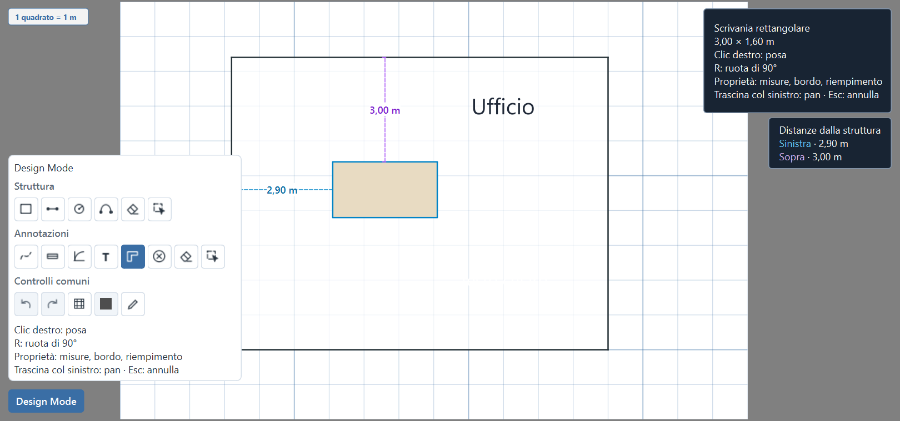
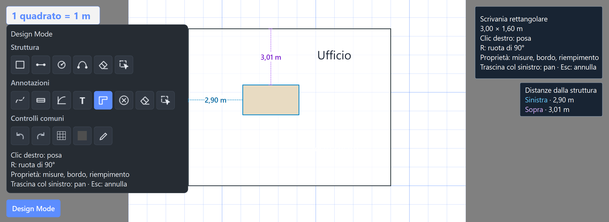
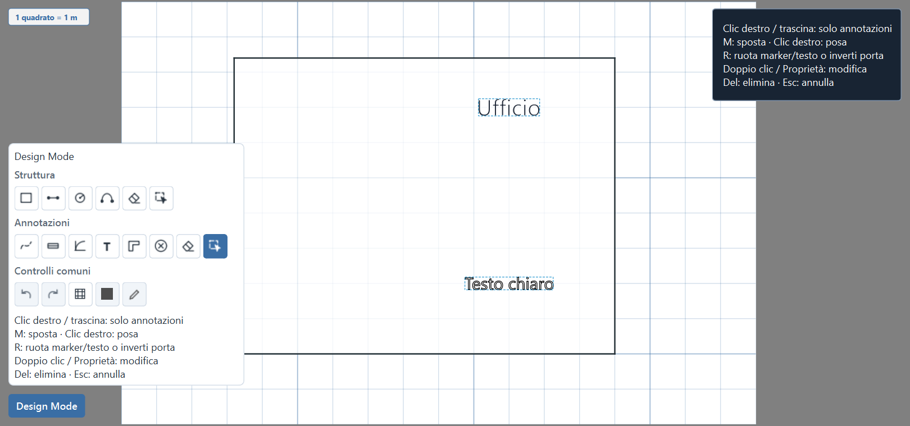
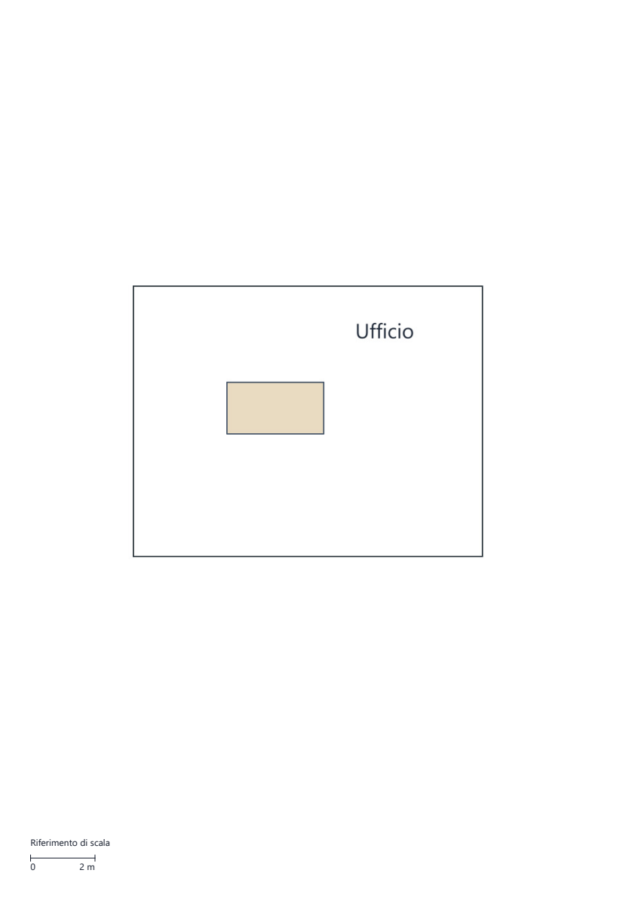

Wi-Fi RF Survey Analyzer · sorgenti 1.2.0 · 06.11.2026
Planimetria: audit e correzioni
Verificati geometria, strumenti di disegno, annotazioni, salvataggi, rendering,
stampa e costo delle interazioni. Corrette cause reali di lentezza, la persistenza
dei colori e la visibilità del testo selezionato. Aggiunte le distanze dalla struttura.
1.723 + 479test e sottotest della suite completa
24 configurazioniUI nativa · quattro lingue, due temi, tre scale
1.610 → 2,73 msricerca porta fuori parete · caso sintetico con 600 pareti
Posizionare gli oggetti con riferimenti reali
Scrivanie e simboli mostrano fino a due quote minime verso la struttura, una per
asse principale. La misura parte dal contorno effettivo, non dal centro.
Le guide seguono posa, selezione singola, spostamento e rotazione.
Linee tratteggiate e valori in m/ft sulla mappa; riepilogo fisso in alto
a destra. Il rosso indica un'intersezione. Le quote restano strumenti temporanei:
non entrano nella stampa, nei file del rilievo o nei risultati RF.

Acquisizione della UI Qt sui sorgenti, con dati sintetici. Le quote si riferiscono al bordo della scrivania.
Versione scura con UI al 175%

Prestazioni: misure prima e dopo
Stesso interprete e macchina, dati sintetici con 40/200/600 pareti e altrettanti
arredi. Tempi mediani in millisecondi. La misurazione finale include le nuove quote.
Hover e quote: 25 campioni; selezione: 10; porte: 3, dopo un riscaldamento.
Sono tempi delle operazioni sintetiche, non FPS o una garanzia per ogni planimetria.
Il caso quote usa quattro pareti vicine e le restanti lontane; evita la cache della posa.
Le quote sono nuove, quindi non hanno un confronto precedente.
Dati e riproducibilità
JSON prima ·
JSON dopo ·
24 risultati UI.
Runner: tools/benchmark_planimetry.py --output risultato.json e
tools/check_planimetry_ui.py --output cartella. Impostazioni e memoria AP
isolate; nessuna scansione RF o stampa fisica. La baseline è stata raccolta prima
delle correzioni sui sorgenti del commit 74d78cd.
Selezione del testo e stampa
Testo scuro e chiaro
La selezione è riconoscibile senza cambiare lo stile salvato.
Cornice e contorno di selezione sono esclusi dagli export.

Scala grafica in fondo alla pagina
Barra e pianta condividono lo stesso fattore di adattamento.
Il riferimento resta corretto cambiando carta o orientamento.

Pagina prodotta con il dispositivo PDF di Qt e poi renderizzata. Non è una stampa architettonica a rapporto fisso.
Copertura delle verifiche
- Geometria: intersezioni, segmenti spezzati e ricongiunti, ambienti chiusi,
aree, archi/cerchi, snap, selezioni e trasformazioni coperti dalla suite esistente.
- Nuove regressioni: 46 test per quote, contatto contro intersezione, incavi a L,
contorni ruotati, curve, cache, m/ft, eventi mouse e storico, colori, durata dei dialoghi,
selezione del testo e scala stampata. Distanze sulle curve confrontate con un oracolo
indipendente a campionamento denso; scala PDF misurata sui pixel renderizzati in entrambe le unità e orientamenti.
- Persistenza e isolamento: formati opzionali esistenti mantenuti; guide e preferenze
non modificano geometria, chiusura ambienti o dati RF. La suite comprende salvataggio/riapertura,
undo/redo, rollback ed export HTML.
- Grafica: UI Qt nativa sui sorgenti, EN/IT/FR/ES, chiaro/scuro e 100/125/175%;
48 dialoghi scrivanie/simboli con tutte le 13 varianti, controllo del testo e dei box,
fissaggio del riepilogo durante il pan e ispezione delle immagini incluse.
- Suite finale: 1.723 test e 479 sottotest superati in 169,99 secondi,
dopo gli ultimi ritocchi alla selezione, rotazione e Help.
- Ambiente: Python 3.15.2; 31 versioni installate corrispondono al lockfile;
pip check e Ruff essenziale superati. QtPrintSupport usa la dipendenza PySide6
già presente. Nessun pacchetto aggiunto e nessuna modifica alle dipendenze.
Limiti: prove automatizzate e acquisizioni dei sorgenti, senza
collaudo manuale del puntatore, stampante fisica o nuovo EXE. Il benchmark non copre ogni
combinazione al limite massimo dei formati. L'audit riguarda la planimetria: non è una nuova
certificazione della raccolta RF o una ricerca aggiornata di vulnerabilità dei pacchetti.